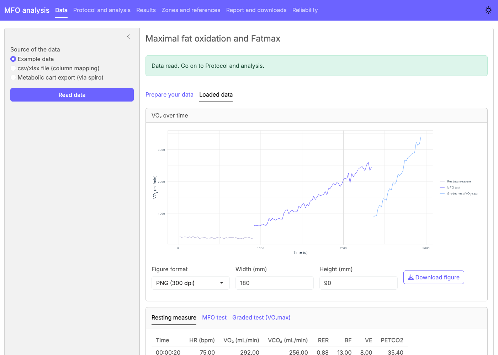
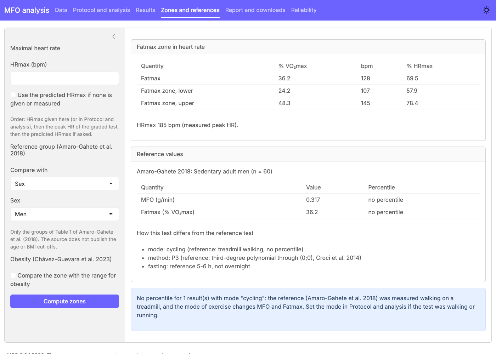

run_app() opens a point-and-click version of the
workflow of vignette("mfo-workflow"). The app does no
science of its own: every number comes from read_cart(),
MFO(), MFO_kinetics(),
MFO_zones() and MFO_reliability(), with the
same arguments and defaults. The screenshots show the example data of
the package.
This is a short tour. The app manual explains every option, output and warning of each tab.
Starting the app
The app needs two suggested packages, shiny and bslib:
install.packages(c("shiny", "bslib"))
MFO::run_app()The interface is in English.
Your data stay on your computer
run_app() starts the app on your own computer, and the
files you upload are read there; nothing is sent to any server. Keep it
that way:
- Do not deploy the app on a public server with participant data. The 0.3.0 release is meant for local use only. A public demonstration, if one is ever offered, will work with simulated or example data and without file uploads.
-
Use codes, not names. The group table and the
report identify a participant only by a code of letters, digits,
_and-(up to 20 characters); anything else, such as a name or an e-mail address, is refused. - Analyser exports often carry the participant’s name in their header lines. The app keeps only the columns you map (time, gases, heart rate, load, ventilation), never the header.
- The group table lives only in the open session: download it before closing the app.
Tab by tab
1. Data
The right side of the tab opens on Prepare your data: the three ways to bring data in (an individual test, a group table built in the app, a results table for Reliability) and two templates, an xlsx of an individual test with one sheet per phase and a csv of results. Reading the data switches to Loaded data: the plot of VO₂ against time and, below it, the tables of each phase.
Choose the source: the example data of the package, a csv/xlsx file with your own column names, or an export of a metabolic cart read by the spiro package (Cortex, Cosmed, Vyntus, ZAN). Upload one or several files, or a zip; every sheet of an xlsx file is a table.
The three phases of the test (resting measure, MFO test and graded test) come either as one table each, or as one recording that you cut: drag over the MFO test on the VO₂ plot to set both cuts, then adjust them in the numeric fields. The cuts are kept in the report and the group table.
The reading options are those of read_cart(): records
already averaged by the analyser or breath by breath, the unit of VO₂ (a
units row in the file is taken as its declaration), lines before the
header, the decimal mark, and elapsed or clock time. Every message and
warning of the reading is shown.

2. Protocol and analysis
The arguments of MFO_protocol(), MFO() and
MFO_kinetics(): type of protocol and exercise mode, step
durations, load schedule, stoichiometric equation, energy equivalents,
method for Fatmax, RER cutoff, handling of negative fat oxidation,
VO₂max from the graded test or measured elsewhere, and the participant’s
age, body mass, fat-free mass and HRmax. The defaults are those of
MFO().
3. Results
The fat and carbohydrate curve with MFO, Fatmax, the Fatmax zone and the crossover point, the steps of the fit under it (downloadable as xlsx or csv, with porc_VO2 shown as %VO₂max), the table of results, and the SIN kinetics. Every plot of the app can be downloaded as PNG at 300 dpi, PDF or SVG, 180 mm wide by default. Confidence intervals are computed on demand (parametric or residual bootstrap, number of replicates, level and seed); they are dropped when the analysis is run again.
The quality alerts are the warnings and messages of the run: few steps, Fatmax at the first or last step, missing heart rate, negative fat oxidation, a VO₂max window rounded to whole records.
At the bottom, a participant code and a session add the result to the
group table of the session (the columns of MFOs(), plus
session, analysis date and phase cuts).

4. Zones and references
MFO_zones() on the current result: the Fatmax zone in
bpm and % HRmax, and the source of HRmax (given, measured peak, or
predicted only if you ask for it). With the obesity option and the body
fat, the zone is compared with the range of Chávez-Guevara et
al. (2023). MFO and Fatmax are placed among the percentiles of sedentary
adults of Amaro-Gahete et al. (2018), always with the group and its N,
and with a list of the ways in which your test differs from theirs. That
reference was measured walking on a treadmill, so a cycling test gets no
percentile.

5. Report and downloads
The individual report is a single HTML file, with the plots inside, that opens in any browser; Save as PDF opens the print dialog of the browser with it, and Download report (Word) saves it as a .docx file (with the package officer). Reports and downloaded figures are always light; the app itself has a dark mode (the moon in the navigation bar). It holds the curve and the results (with their intervals if computed), the SIN kinetics, the heart-rate zones and reference values, the quality alerts, a methods paragraph ready to adapt for a paper, its references, and a footer with the package version and commit, the dates of the analysis and the report, the data source, the phase cuts and the seed. The methods paragraph starts with a bracket for you to complete (hours of fasting and ergometer) and cites only the sources the package has verified.
The group table can be downloaded as xlsx or csv.
6. Reliability
MFO_reliability() on the group table of the session, or
on one downloaded earlier, so that sessions analysed on different days
can be put together: two or more sessions per participant, at least 3
participants (30 or more are recommended). It shows the ICC, SEM, MDC
and CV of each outcome, the bias and limits of agreement of each pair of
sessions, and the Bland-Altman plots.